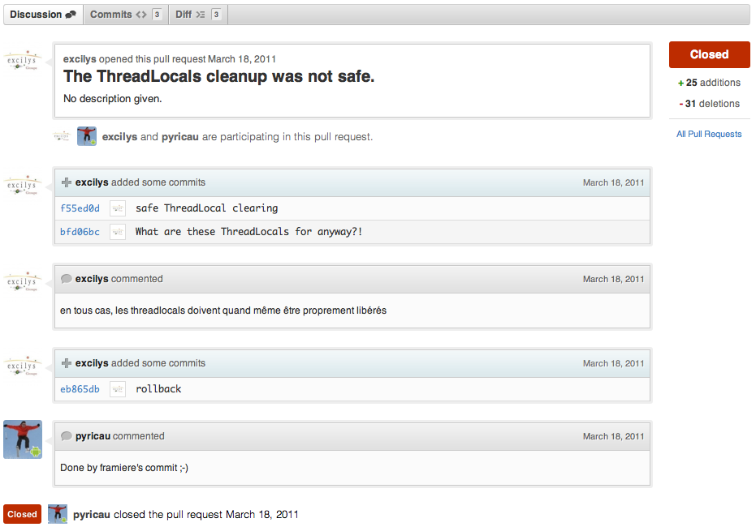
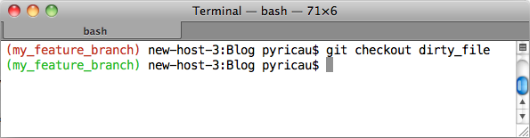

Roooh jai encore oublie ma branche git
[ : October 9, 2011]
Introduction¶
La startup pour laquelle je bosse depuis peu héberge son code source sur GitHub, et ça, c’est carrément cool.
En plus, nous sommes récemment passé d’un workflow old school (tout le monde commit comme des sauvages sur la même branche) à un workflow de type feature branching. Encore plus cool !
Le merge d’une feature branch sur la branche d’intégration ne se fait qu’après validation (revue de code et tests fonctionnels) par quelqu’un qui n’a pas développé la feature. Dans cette optique, les pull requests de GitHub se révèlent particulièrement pratiques.

Mais trêve de bavardage, venons-en à l’objet de cet article.
Roooh, j’ai encore oublié ma branche Git !¶
Avec le feature branching, on se retrouve à changer fréquemment de branche.
Du coup, j’ai tendance à ne plus savoir sur quelle branche je me trouve, ou encore à oublier le nom précis de la branche, et à taper git branch toutes les trois commandes.
Un membre de l’équipe nous a envoyé un script plutôt pratique, qui ajoute le nom de la branche en cours au prompt de votre terminal :

Le petit truc cool en plus, c’est que le nom s’affiche en rouge si vous avez des modifications locales (dirty working tree), et en vert dans le cas contraire.
Instructions à ajouter à votre fichier ~/.bashrc (ou ~/.profile sur Mac) :
# git branch name in prompt
c_red=`tput setaf 1`
c_green=`tput setaf 2`
c_sgr0=`tput sgr0`
parse_git_branch () {
if git rev-parse --git-dir >/dev/null 2>&1
then
gitver=$(git branch 2>/dev/null| sed -n '/^\*/s/^\* //p')
else
return 0
fi
echo -e "($gitver) "
}
branch_color () {
if git rev-parse --git-dir >/dev/null 2>&1
then
color=""
if git diff --quiet 2>/dev/null >&2
then
color="${c_green}"
else
color=${c_red}
fi
else
return 0
fi
echo -ne $color
}
PS1="\[\$(branch_color)\]\$(parse_git_branch)\[$(tput sgr0)\]$PS1"
Dans le même ordre d’idée, voici un article bien pratique pour disposer de l’autocomplétion des noms de branches.
À vous, partagez vos astuces ;-) !
Comments¶
Olivier Bazoud¶
Je préfère utiliser celui ci livré par Git, utiliser la variable __git_ps1 et en plus ça gère beaucoup plus de cas (modifications locales, fichier non trackes, stash, uptream, commit locaux, commits remote, …)
Dans mon ~/.bashrc:
if [ -f /etc/bash_completion.d/git ]; then
. /etc/bash_completion.d/git
fi
GIT_PS1_SHOWDIRTYSTATE=true
GIT_PS1_SHOWSTASHSTATE=true
GIT_PS1_SHOWUNTRACKEDFILES=true
GIT_PS1_SHOWUPSTREAM="verbose"
PS1='\A [${debian_chroot:+($debian_chroot)}\[33[01;32m\]\u@\[33[0;33m\]\h\[33[00m\]]\[33[01;31m\]$(__git_ps1)\[33[00m\]% '
@obazoud
Piwaï¶
Merci Olivier, j’avais découvert bash_completion.d dans l’article cité plus haut, mais je n’avais pas testé la partie modification du PS1.
Je m’en vais essayer ça de ce pas !
PS : je me suis permis d’ajouter la coloration syntaxique à ton commentaire ;).
Sam Bessalah (@samklr)¶
Ou bien tu peux utiliser oh-my-zsh, qui prend en compte git nativement et t’averti dans quelle branche tu te trouves, etc .. En tout cas impossible d’utiliser le shell sans, pour moi.
Piwaï¶
@Olivier : après avoir testé, c’est effectivement pas mal mais il manque la couleur :).
@Sam : depuis le temps qu’un de mes potes me bassine avec ZSH, je crois que c’est l’occasion de tester :).
Sam Bessalah (@samklr)¶
Tu devrais, j’étais dubitatif moi aussi, mais là côté productivité on fais pas mieux. :)
Piwaï¶
Merci Sam, ça fait à peine 40 minutes, je sais que j’ai déjà switché définitivement vers ZSH :). oh-my-zsh est magique, et les themes dispos sont bien sympas :).
hugoch¶
Ah c’est assez niquel ! Merci pour l’astuce. A quand un article sur zsh du coup ?!
Piwaï¶
Oh, pas vraiment besoin d’un article, en gros ça marche comme bash mais en mieux, et il suffit de suivre les instructions du lien donné par @samklr pour démarrer ;).